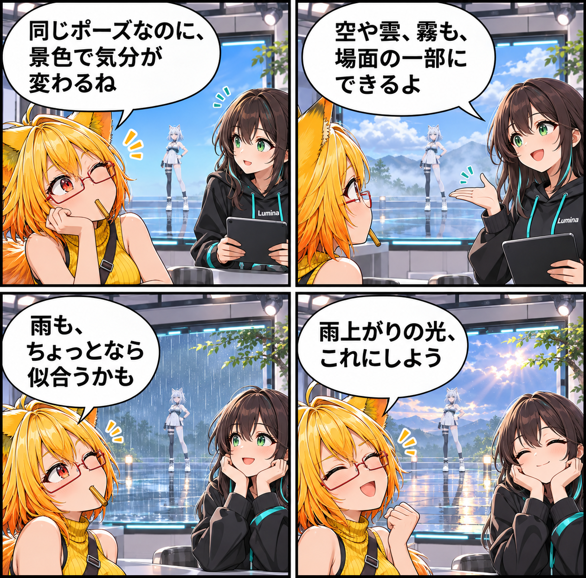

2026.11.13 / Development Log / Feature Spotlight
閑話休題：空模様を、スタジオの演出にする
新規実装の報告ではなく、VRASに既にあるスタジオ環境の表現を紹介します。アバターを置く景色の空や雲、霧、雨や雪といった要素を、撮りたい一枚の雰囲気に合わせて組み立てるための機能です。
今回は feature-spotlight（機能紹介） です。集計期間は2026-11-12 03:00:00 JSTから2026-11-13 02:59:59 JSTまで、対象はViewerの
main です。集計終了時点のHEADは c33733a41be121b814a1732df8c9eae089ace2ea、期間内コミットは0件でした。Assets/Scenes/MainScene.unity の未コミット差分は、期間内に実装された事実を確定できないため実績には含めていません。
景色は、アバターの外側にある演出
VRASのスタジオでは、VBG背景やSkyboxに加え、空、雲、霧、雨や雪、水面などのPhysical Weatherと環境エフェクトを扱えます。アバターのポーズを変えなくても、周囲の表情が変わると一枚の印象は大きく変化します。
今日はどんな空にする？
晴れた空をそのまま使うだけでなく、少し雲を足したり、遠くを霧でやわらげたりできます。雨や雪も、画面をにぎやかにするためだけの飾りではなく、場面の気分を考える手がかりになります。
光とは分けて考える
環境の見え方には、SkyboxやUnity Ambientを扱うGlobal Environmentと、VBG Baked ProbeまたはAdaptiveGIで扱うLocal GIという別の要素があります。Local GIは二重に適用しない設計です。景色を決めたあとで光の方向や明るさを見直すと、狙った雰囲気を探しやすくなります。
今回の紹介範囲
これは現行実装のスタジオ環境機能の紹介です。すべての背景・アバター・効果の組み合わせでの品質検証完了や、当日の新規実装を示すものではありません。
4コマの話
ろひは、同じポーズでも空が変わると気分まで変わることに気づきます。ルミナは雨を大げさな事件にせず、景色の一部としてそっと足す提案をします。最後は、二人が小さな雨上がりの光を眺めて締めます。
まとめ
VRASのスタジオ環境は、空や天候の要素を使ってアバターを置く場所の印象を整える既存機能です。背景と光を見比べながら、その場面に似合う景色を探せます。